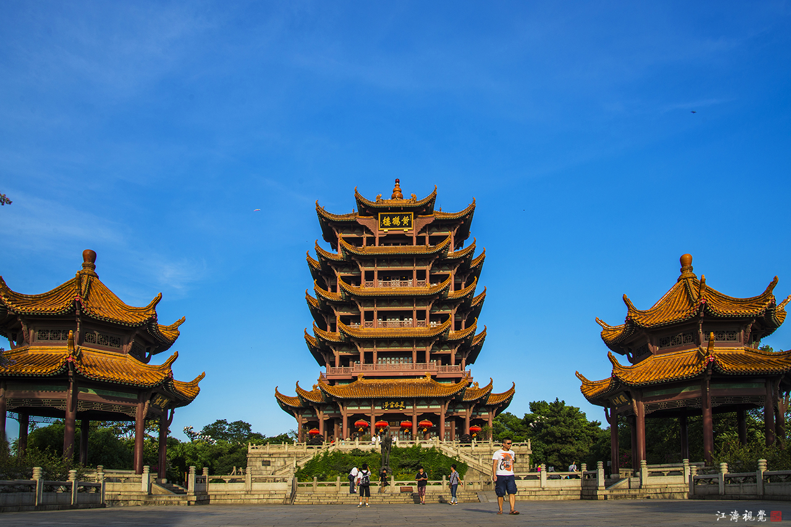
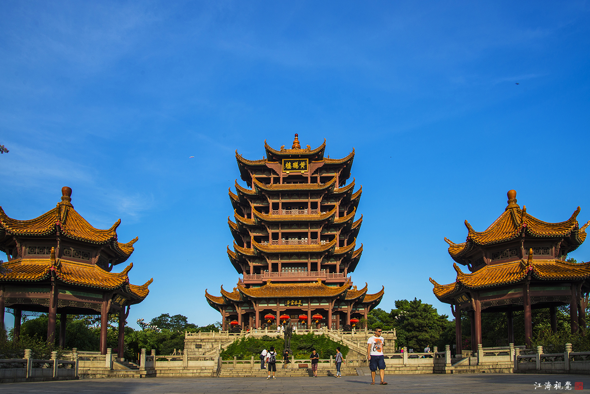

武汉概况
武汉是中国中部地区的重要城市，拥有丰富的历史、文化和美食。 武汉有着悠久的历史，可以追溯到3500多年前的商代。 武汉是中国重要的文化中心之一，拥有丰富的文化遗产和历史遗迹。 武汉是中国重要的教育中心，拥有多所知名大学，如武汉大学、华中科技大学等。
“天下第一楼”黄鹤楼
武汉是中国中部地区的重要城市，拥有丰富的历史、文化和美食。 武汉有着悠久的历史，可以追溯到3500多年前的商代。 武汉是中国重要的文化中心之一，拥有丰富的文化遗产和历史遗迹。 武汉是中国重要的教育中心，拥有多所知名大学，如武汉大学、华中科技大学等。
“天下第一楼”黄鹤楼
江滩夜景